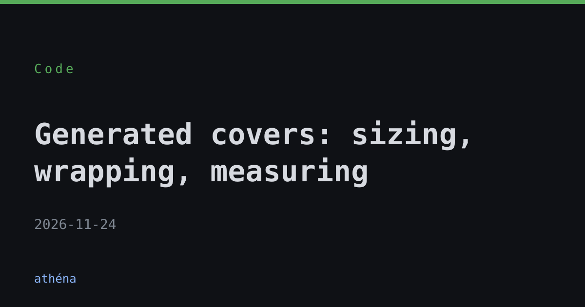

Generated covers: sizing, wrapping, measuring
How the engine sizes the title, wraps it onto two lines and reads the SVG back — with the real case of the clipped title at 1228 px and the x=989/1200 measurement.
What the engine draws
Journal articles have no photograph. When an article has no couverture
field, moteur.couverture_article() returns
couvertures/{langue}-{slug}.svg, and generer_couvertures() draws the
file: an SVG with viewBox="0 0 1200 630", a colour bar chosen from the
category, the category label, the title, the date and the name. Nothing is
copied by hand; the colour comes from store/journal.yml.
store/outils/couverture.py reuses those functions for a single article
without redrawing any SVG.
One detail of that function arrived through a bug, not as a stylistic choice: the title is computed.
The computed size
_couverture_titre(titre, largeur=1060, taille_max=60) tries sizes from
60 down to 24 px in steps of 2. For each size it sets the characters per
line to max(8, int(largeur / (taille * 0.6))), wraps the title with
textwrap.wrap, and accepts the size only if
len(ligne) * taille * 0.6 <= 1060 holds for every line. If no size
fits, it falls back to 24 px and a 12-character wrap.
The 1060 px of usable width are 1200 minus the two 70 px margins. The 0.6 factor is a conservative approximation of one monospace character’s width. It is not measured: it is a sizing assumption. The real measurement comes later.
Replayed this morning against the installed engine:
"Pourquoi la preuve est par projet" -> size=60
"Why proof is per project" -> size=60
"Le vérificateur, ou comment le site ne triche pas" -> size=60
Wrapping onto two lines
The title is not shrunk indefinitely: it is cut. Each line becomes its own
<text> element, at x="70" and y = 296 + i * (taille + 16). The date
moves down to date_y = 296 + number_of_lines * (taille + 16) + 22. The
SVG keeps the full title in its aria-label attribute even when the title
spans two lines.
Replayed on the three titles above:
FR "Pourquoi la preuve est par" / "projet" 2 lines, 26 and 6 chars
EN "Why proof is per project" 1 line, 24 chars
FR "Le vérificateur, ou comment" / "le site ne triche pas" 2 lines
The first FR line is 26 × 60 × 0.6 = 936 px by the heuristic; the EN line is 24 × 60 × 0.6 = 864 px. Those are the computed figures, not the rendered ones.
The real case of the clipped title
On 19 November 2026, Jacob showed a screenshot: on the English page the
<title> and the <h1> said « Why proof is per project », but the large
image above them showed the French title, and « it doesn’t fit inside
fully ». Two symptoms, one cause: the cover image.
The archived transcript (data/recherches/u19-transcript-reel.jsonl,
lines 18 to 25) records the diagnosis as it was made at the time:
- the cover was a single file shared by both languages, generated with the French title; hence French text on the English page;
- the French title was 33 characters at 62 px, i.e. 1228 px on a 1200 px image: it was clipped on the right. There was no size calculation and no line wrapping at that point.
The fix is visible in history (git show 8c8266f, 19 November 11:59):
the filename gains a language prefix, and _couverture_titre appears with
the size loop and textwrap.wrap. The Code label in the SVG has nothing
to do with the article: it comes from the code category in
journal.yml.
Pixel-level verification
Two levels of re-reading exist today.
couverture.py verifier(page, rel) opens the SVG produced, checks that it
is valid XML, that aria-label equals the title, and that the title,
category label and date are present in the drawing. That is a
structural re-read: it cannot tell whether the text overflows.
The measurement recorded on 19 November is x=989 out of 1200: the rightmost text ended at 989 px, so nothing was clipped. That is the value I cite, exactly as it appears in the archived transcript (lines 24 and 25).
I replayed it this morning with more caution. Measuring the FR line
« Pourquoi la preuve est par » with DejaVu Sans Mono Bold at 60 px via
ImageFont.getlength() gives 939.2 px, an end at x≈1009. The gap with
989 comes from rendering: the original browser was not using this font,
and the ui-monospace, Menlo, Consolas, monospace stack does not resolve
the same way from one machine to another. The 989 value is therefore
verified as recorded, but not reproduced exactly with the font
available here. Both stay well under 1200, so the conclusion — nothing is
clipped — holds either way.
Known limit: the 0.6 factor and the pixel measurement are two different
tools. The first sizes, the second observes. couverture.py’s verifier
measures no pixels — it re-reads the SVG. Until a real render enters the
verification loop, an overflow caused by a wider-than-expected font will
stay invisible to verifier() alone.